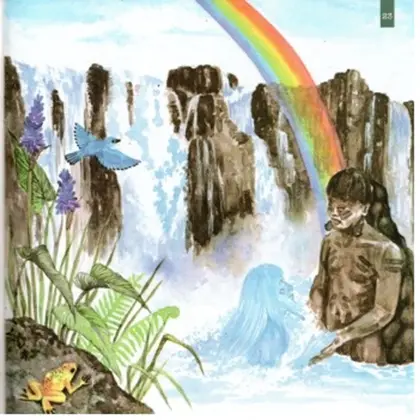

O que é:
As lendas paranaenses fazem parte do folclore e da cultura do Paraná. Elas contam histórias transmitidas de geração em geração. A Lenda da Gralha-Azul é uma das mais conhecidas do estado. Ela está relacionada à araucária, símbolo do Paraná. As lendas também possuem influência dos povos indígenas, como Guarani e Kaingang. Muitas histórias envolvem a natureza, os animais, rios e florestas. Elas ajudam a preservar costumes, crenças e tradições populares. Também mostram a mistura de diferentes culturas presentes no Paraná. Por meio das lendas, as comunidades preservam sua memória e identidade. Assim, elas são importantes para valorizar e conhecer a cultura paranaense.
Algumas das Lendas Paranaenses
As lendas paranaenses se desenvolveram a partir do encontro forçado e da fusão cultural de três grandes eixos: os povos indígenas originários, os colonizadores europeus e os povos escravizados de matriz africana. Mais tarde, o isolamento geográfico de certas regiões e os ciclos econômicos do estado ajudaram a fixar e espalhar essas histórias.
A Importância das Lendas Paranaenses
A importância das lendas paranaenses vai muito além do entretenimento ou de "histórias para assustar crianças". Elas desempenham um papel fundamental na construção da identidade, na preservação ambiental e na memória histórica do estado

Curiosidade 1
Em Curitiba, há a lenda de um suposto pirata inglês que viveu exilado no bairro Pilarzinho no século XIX e teria enterrado um tesouro na região.
Curiosidade 2
Conhecida como a santa popular de Curitiba, uma jovem assassinada no século XIX cujo túmulo azul no Cemitério Municipal recebe pedidos e atrai fiéis por supostos milagres.